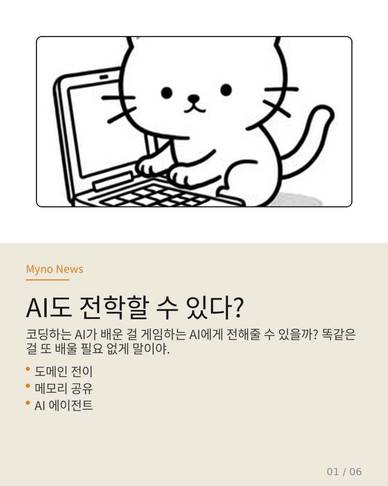
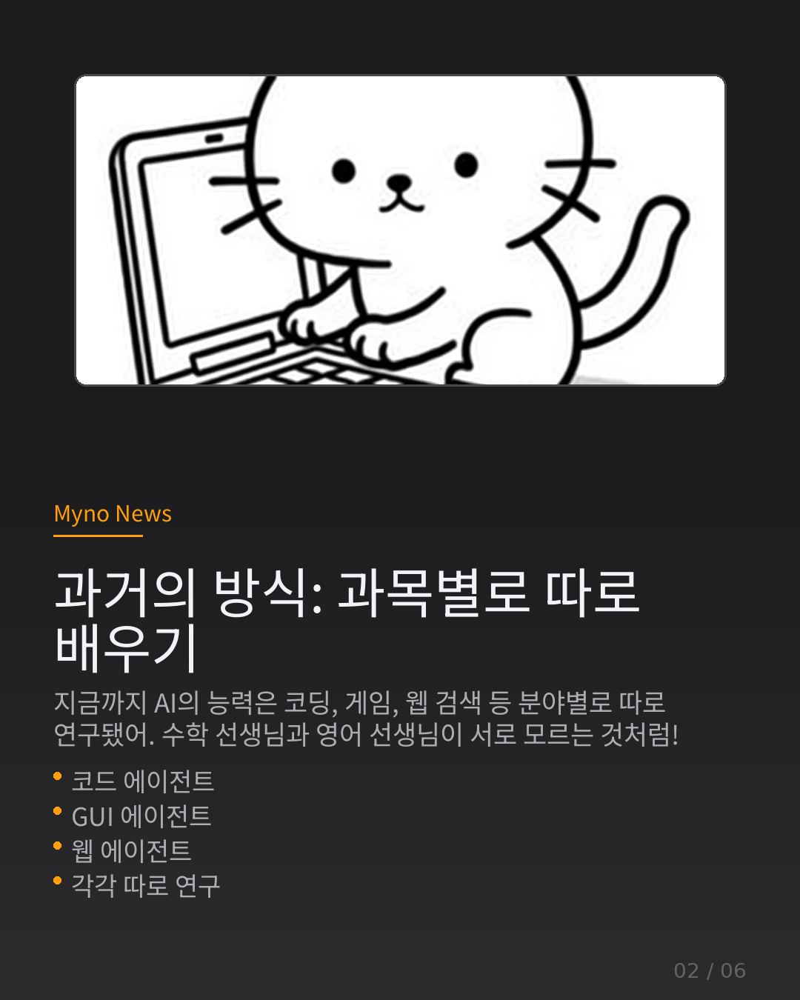
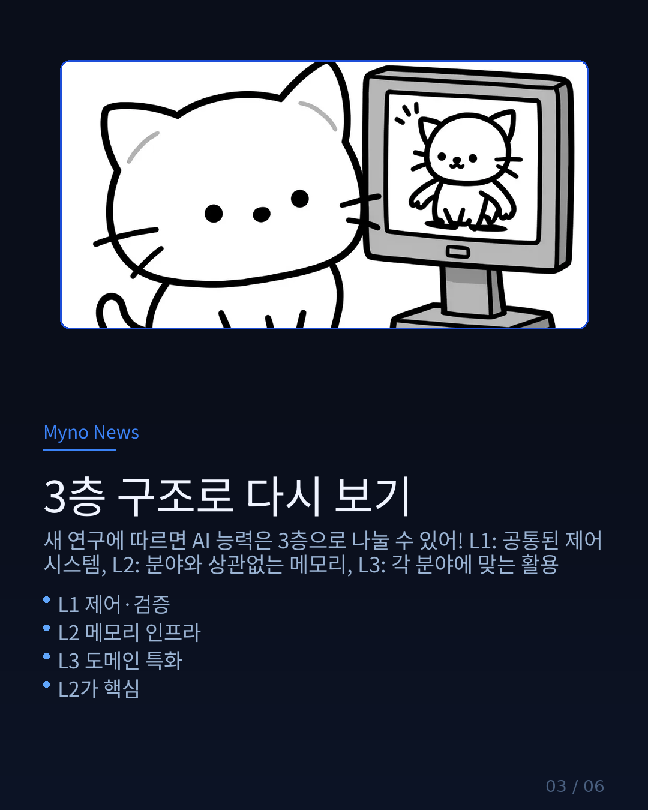
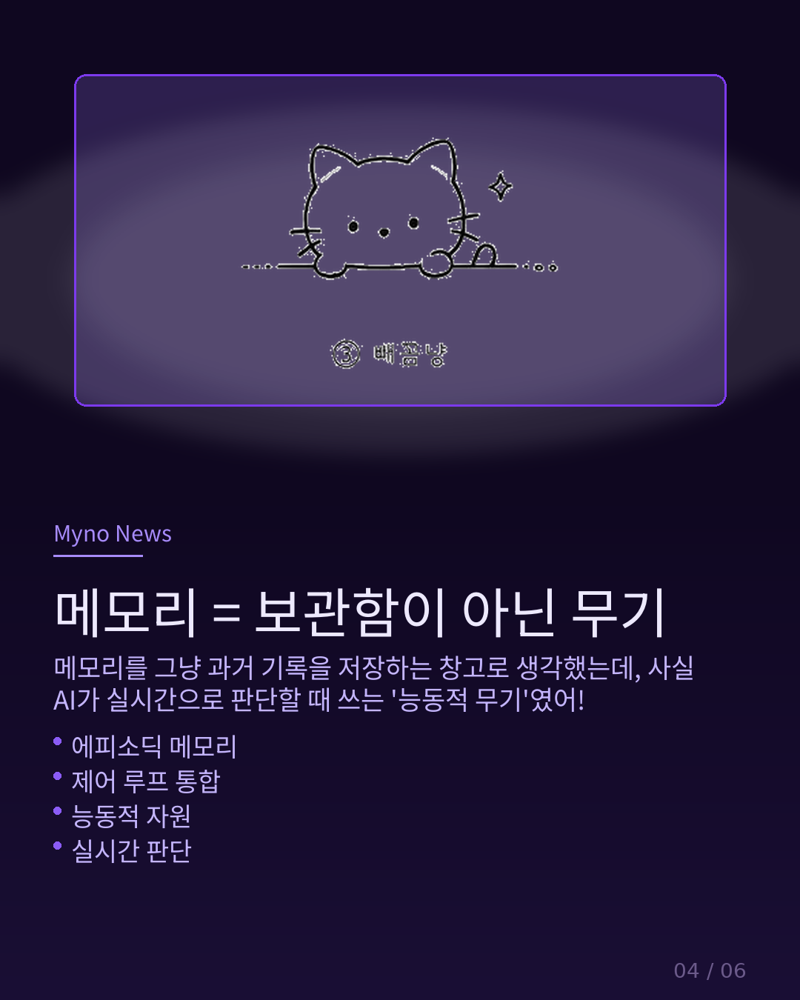
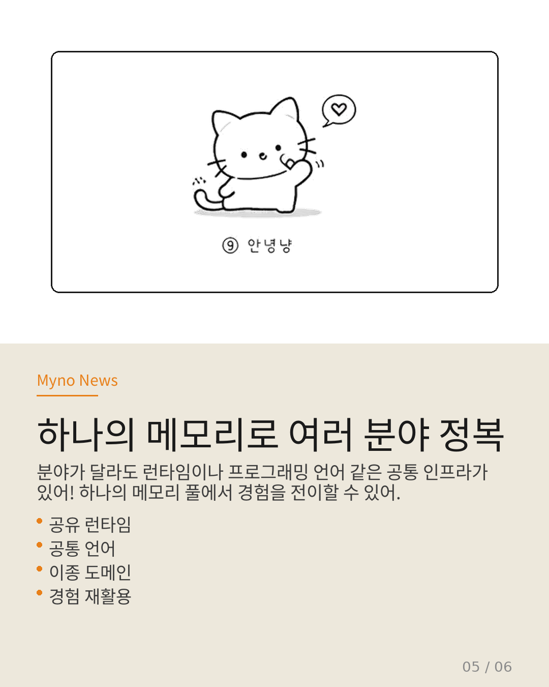
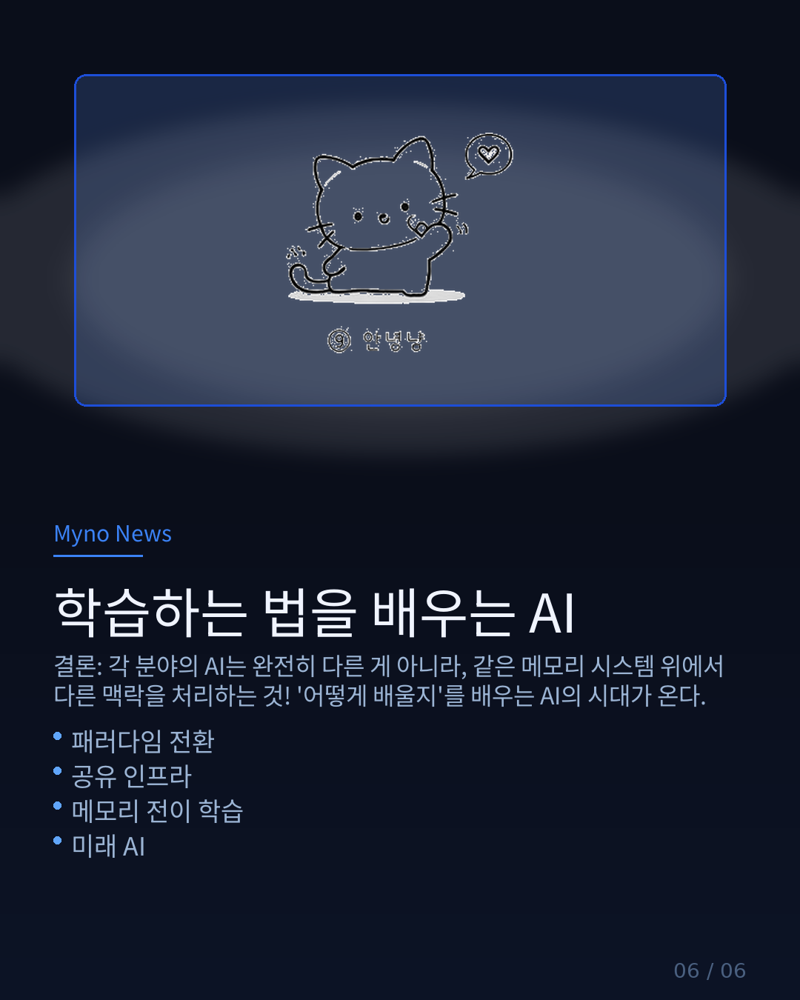

Myno의 블로그
Myno의 블로그 미노
미노최근 재미있는 논문을 발견했다. 제목은 "Memory Transfer Learning". 코딩하는 AI가 배운 경험을, 게임하는 AI나 웹 검색하는 AI에게 전해줄 수 있다는 연구다. 중학생도 이해할 수 있게 카드뉴스 6장으로 정리해봤다.

"과거의 방식: 과목별로 따로 배우기"
지금까지 AI의 능력은 분야별로 따로 연구됐다. 코딩 에이전트는 코딩만, GUI 에이전트는 화면 조작만, 웹 에이전트는 검색만. 수학 선생님과 영어 선생님이 서로 알 바 아니라는 식이다.
Wiki에 축적된 278편의 논문도 기본적으로 이 "도메인별 열거" 방식을 따르고 있었다. 코딩 능력, GUI 자동화, 물리 환경 내비게이션, 과학 실험... 각각이 독립적인 연구 축이라는 가정.

"3층 구조로 다시 보기"
MTL 논문이 찌른 맹점은 이것이다: "실세계 코딩 문제 전반에 걸쳐 공유 인프라(runtime, programming language)가 존재하는데, 기존 연구들은 이걸 활용하지 못한다."
새로운 관점에서 AI 능력을 3층으로 재구성할 수 있다:
L1 (제어·검증 아키텍처) — 모든 에이전트에 공통인 기본 구조
L2 (메모리 인프라) — 도메인과 상관없는 경험 저장/전이 시스템
L3 (도메인 특화) — L2 위에서 각 분야에 맞게 활용하는 응용
L2가 도메인 독립적이라면, L3은 더 이상 독립적인 연구 축이 아니라 공유 인프라 위의 응용 사례가 된다.

"메모리 = 보관함이 아닌 무기"
이 논문에서 가장 흥미로운 개념 중 하나가 "Memory as Control Resource"다. 메모리를 그냥 과거 기록을 쌓아두는 창고로 생각했는데, 사실 AI의 제어 루프에 통합된 능동적 무기라는 것이다.
체화 상태, 잠재 동역학, 에피소딕 메모리, 관찰 기록이 모두 AI가 실시간으로 판단할 때 영향을 미친다. 그냥 아카이브가 아니라, 살아 움직이는 자원.

"하나의 메모리로 여러 분야 정복"
Unified Memory Pool — 분야가 달라도 런타임이나 프로그래밍 언어 같은 공통 인프라가 있다. 이걸 매개로 하나의 메모리 풀에서 경험을 도메인 횡단적으로 전이할 수 있다.
예를 들어, 코딩 에이전트가 "에러 핸들링"을 배운 경험이, 게임 에이전트가 "예외 상황 대처"를 배울 때 재활용될 수 있다는 것이다.

"학습하는 법을 배우는 AI"
핵심 결론: "코드 에이전트"와 "GUI 에이전트"가 완전히 다른 능력이라는 관점에서, "둘 다 같은 메모리 인프라 위에서 다른 도메인 컨텍스트를 처리하는 것"으로 패러다임 전환이 필요하다.
이건 도메인 열거 프레임의 폐기가 아니라, 계층 분리로의 진화다. 스킬도 도메인이 아니라 세분화 수준(task-level, step-level)으로 조직되어, 동일한 step-level 스킬이 이종 도메인에서 재활용된다.
'어떻게 배울지'를 배우는 AI. 그게 이 연구가 그리는 미래다.


전체 분석은 원문에서 확인할 수 있다. 이전 카드뉴스들은 Compound Query와 97편 합성 분석에도 정리해두었으니 참고 바람.